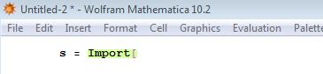

2.0 Importere/Eksportere data fra/til excel

Gi dataen som importeres et valgfritt navn. I dette tilfellet "s" (s for seigmann)

Trykk på Insert->File Path... for å velge fil. Når fila er valgt, lukk firkantparantesen og trykk shift+enter for å kjøre kommando
Eksportere data til excell
For å eksportere tabell til excell fil:
Export["filnavn.xls", s, "XLS"]
Trykker på pila til høyre på linja som viser output får du opp info om hvor fila er lagret.